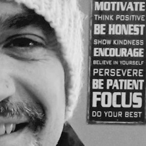

x
"I believe that making music – and especially singing because the musical instrument we use is our own body – is the most fun, healthy, effective and easy method to connect with ourselves and people around us. It releases stress and unlocks our natural potential to think creatively. My mission is to share my passion and my experience with the participants of SYC workshops!" ~ Eva Klirowska
Eva is a professional singer, choir conductor and teacher. She has 20 years of experience in teaching music to adults and adolescents. Over her career she has performed in the USA, Switzerland and Poland. She practices singing with
passion and uses it as therapy.
Music Teacher
- "The Source" in Renens, VD
- "EJMA Valais" in Martigny, VS
- "Alfa" in Sion, VS
- Independent music courses
Choir Conductor
- "Mixed Choir of Morgins" in Morgins, VS (since 2010)
- "Esperance" in Troistorrents, VS (since 2008)
- "Choeur d’Hommes" in Val d'illiez, VS (since 2014)
- "Savièse Chante "in Savièse, VS (2000-2007)
- "Polyphonia" in Vernayaz, VS (2000-2002)
- Regular practice sessions and extensive performing
Musical Education
- Vocal training and classical music studies at the Nowowiejski Music Conservatory in Szczecin, Poland (1984-1989)
- Jazz studies at Berklee College of Music in Boston, USA (1993-1997)
Dance Background
- Dancer in a youth dance group “Rytm” in Poland (1975-1986)
- (Extensive performing and winners in consecutive annual national competitions)

"Each time I review videos made for Sing Your Creativity, I'm amazed at how people get involved and work together with such positive energy although they seldom know one another! It really has a powerful impact on teams." ~ Olivier Gallen
After managing IT Purchasing projects for international companies for over 10 years, Olivier decided to follow his passion in photography, media and hiking. He is now focusing on what makes people find their inner passion and
how they can use that in their personal and professional life.
"Having spent ample time in numerous groups and corporate settings, I've come to understand the importance of team-building seminars. SYC provides a very unique experience in that it brings music into the mix." ~ Sylvester Klirowski
With a background in computer science, over the past decade Sylvester has been involved in many areas of the software industry, from Analyst to Consulting to Sales. More recently he has transitioned to web and application development,
which he finds fascinating and exciting.
"Lawyer by day and dancer by night, I trade my work clothes for dance gear every day. As such, I strongly believe that art and music not only allows us to stay balanced, but also brings the best out of us. This is what SYC does so well - it enables everyone to connect with their inner Artist, and is perfectly adapted for our work environment." ~ Marlena Wisniak
With a background in law and international relations, Marlena practiced law at a Geneva-based firm, where she advised private sector actors and non profits in their support for public interest. Currently working in Human Rights
and international development, she is also a professional dancer and has 10 years of experience in teaching. Seeing SYC as an opportunity to combine work and leisure as a means towards self-fulfillment, she greatly supports its
mission.